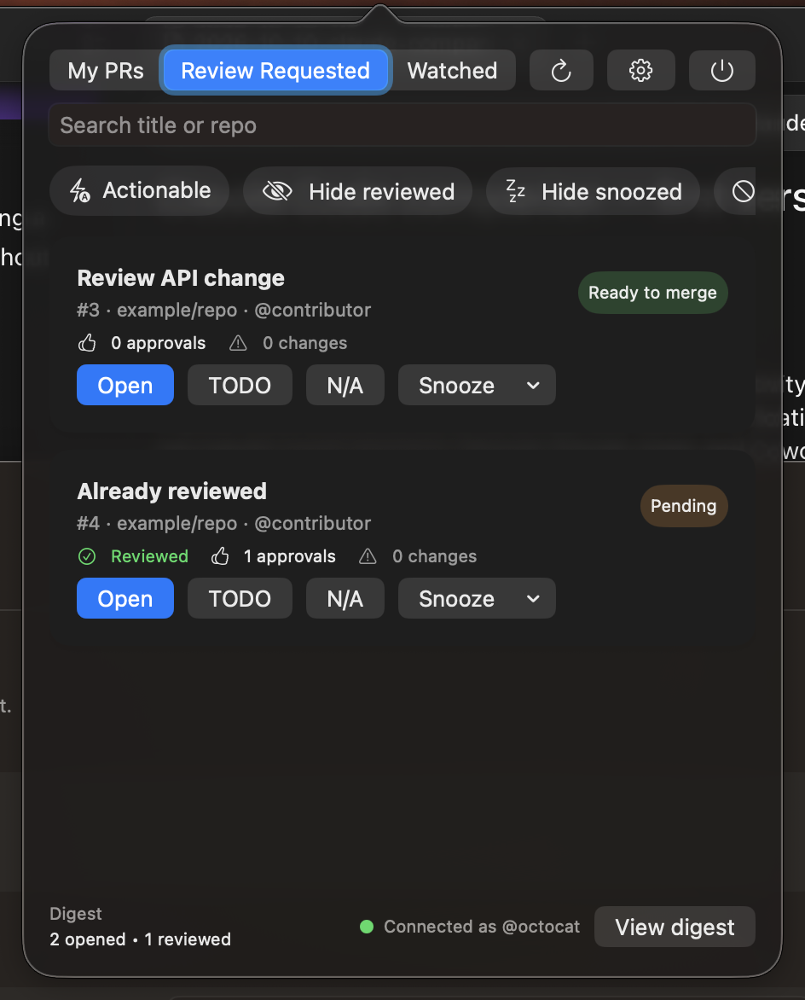

Your review queue, together.
Switch between review requests, PRs you’ve authored, and repositories you watch. Search by title or repository.
MY PRS / REVIEW REQUESTED / WATCHEDA LITTLE LESS TAB SWITCHING
Keep an eye on your GitHub reviews, without losing your flow. Your PRs, review requests, and watched repos — right in your Mac’s menu bar.
Free & open source · macOS 14+ · Apple Silicon & Intel
New name, same companion. Current downloads are named PR Pulse.

LESS HUNTING. MORE MOMENTUM.
Your next review shouldn’t be buried in a browser tab. Bring the work that matters into one compact view.
Switch between review requests, PRs you’ve authored, and repositories you watch. Search by title or repository.
MY PRS / REVIEW REQUESTED / WATCHEDSnooze a PR for later, mark it TODO, or set it aside as N/A. Your triage stays local, so your GitHub workflow stays yours.
SNOOZE / TODO / N/AA menu bar badge brings actionable PRs into view. Tune refresh and notification preferences to fit the way you work.
ACTIONABLE FILTER / REMINDERS / DIGESTSMALL APP. SHORT SETUP.
No new dashboard to babysit.
Just a little more awareness.
Download the latest release, open the DMG, and drag the app into Applications.
Add a personal access token in the app’s Account settings. Credentials are stored in macOS Keychain.
Open the menu bar popover when you need it. Review on GitHub, snooze for later, and keep moving.
GOOD QUESTIONS.
Yes. MergeOwl is the new product name. The current release, repository, and app screenshots still use PR Pulse while the rename rolls out. Download links take you to the existing GitHub release.
A Mac running macOS 14 or newer, on Apple Silicon or Intel, and a GitHub.com account with a personal access token. GitHub Enterprise Server, GitLab, Windows, and Linux are not currently supported.
Yes. The current app is free and open source under the MIT license. You can explore the code, report an issue, or contribute on GitHub.
The current early release is ad-hoc signed and is not Apple-notarized. Follow the repository’s first-launch instructions before installing.
MergeOwl helps you track and triage PRs. Opening a PR takes you to GitHub to review or merge. Snooze, TODO, and N/A are local actions; they don’t change the PR on GitHub.
YOUR MENU BAR’S NEW LOOKOUT.
Free & open source. Made for your Mac.